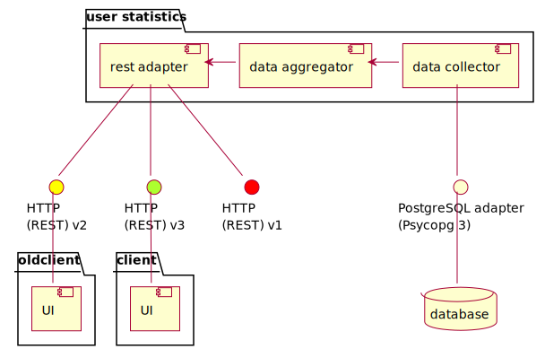

week 6 summary
gergo.pinter@uni-corvinus.hu
interface is an agreement
- how a module / component will work
- so as long as the agreement is complied the components do not need
to know about the internal structure/work of the other components
- separation of concerns
- single responsibility principle
- the other component can be replaced, mocked

interface changes should be communicated
- during design / development
- change can be necessary / allowed, but communicate towards the impacted teams
- diagrams show inner dependencies
- services announce API deprecations
- so as library / framework developers
- can be a source of new issues even if downstream code is not changed

API versions


https://developers.facebook.com/v21.0/me?fields=id,name
def unary_union(self):
warnings.warn(
"The 'unary_union' attribute is deprecated, "
"use the 'union_all' method instead.",
DeprecationWarning,
stacklevel=2,
)
return self.union_all()learning could be a task
- you may need to work a technology / framework / language that you are not familiar with
- that may require research
- fail fast
- document findings
- minimal workable example
- or you just have to learn a new codebase
- calculate with learning during the planning

risk storming
- visual and collaborative risk identification technique
- created by Simon Brown (author of C4 model)
- motivation: often only one person evaluated risks
- risk evaluation should be collaborative activity

based on riskstorming.com | CC BY 4.0
risk register
- a risk register is a document used as a risk management tool
- contains all identified risks with additional information
- category, name, responsible, probability, impact, mitigation, action by, action when
- it can be displayed as a table or as a scatterplot

{kind=link}
| Risk | Impact (1-3) |
Likelihood (0-10) |
Risk (I * L) |
Mitigation |
|---|---|---|---|---|
| Rust Language Changes | 2 | 7 | 14 | Target a specific Rustc version |
| Missing GCC 13 upstream window | 1 | 6 | 6 | Merge in GCC 14 and be proactive about reviews |
schedule milestones
- visualize project milestones
- Gantt chart
- keep the entire team posted
- pay attention to holidays
- multiple countries in the case of an international team
- things won’t go as planned, so
- add safety margin (wiggle room)
- e.g., an extra week before deadline for fixing bugs

{kind=link}
assign responsibilities and tasks
- every task you want to make done should have exactly one person
responsible
- no assignee – no one will do it
- more than one – “I though the other one was doing it”
- define area of responsibility
- a task (as in scrum) should have definition of done, which specifies it
- everyone needs to know what other people are responsible for
- scrum/kanban board can visualize it
- issue/ticket trackers can also work

at the end of a sprint planning, every task in the sprint backlog should have an assignee
source: [2]
dependencies


allocate resources
- scrum (and agile in general) does not say anything about how to estimate (time)
- story points are often used instead
- (relative) unit of effort required to fully implement a product backlog item
- e.g., 1–5,
- Fibonacci: 1, 2, 3, 5, 8, 13…
- powers of 2: 1, 2, 4, 8, 16, 32…

{kind=link}
“Story points reward team members for solving problems based on difficulty, not time spent. This keeps team members focused on shipping value, not spending time [3].”